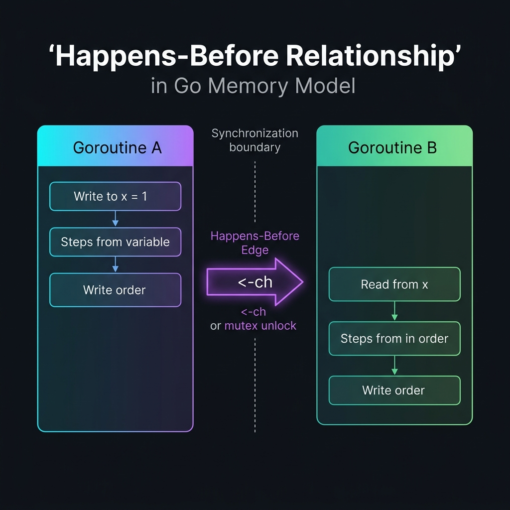

Race Conditions trong Go ⚠️ Critical
Race condition (điều kiện tranh chấp) là một trong những lỗi concurrent programming khó phát hiện và nguy hiểm nhất. Tài liệu này đi sâu từ khái niệm cơ bản đến kỹ thuật expert-level để phòng tránh và phát hiện race conditions trong Go.
- 01 Race Condition là gì? — Định nghĩa & ví dụ đơn giản
- 02 Tại sao Race Condition nguy hiểm?
- 03 Race Detector (-race flag) — Công cụ phát hiện
- 04 Synchronization Primitives — Bộ công cụ đồng bộ
- 05 Patterns phổ biến — Counter, Map, Producer-Consumer
- 06 Nâng cao — Go Memory Model, Happens-Before
- 07 Expert — Lock-Free, CAS, False Sharing
- 08 Race Condition Checklist
01. Race Condition là gì?
Race condition xảy ra khi hai hay nhiều goroutines đồng thời truy cập vào cùng một vùng dữ liệu (shared data) và ít nhất một trong số đó thực hiện thao tác ghi (write), mà không có cơ chế đồng bộ nào.
A data race occurs when two goroutines access the same variable concurrently and at least one of the accesses is a write. — Go Memory Model
Ví dụ cơ bản nhất
package main import ( "fmt" "sync" ) func main() { var counter int // biến dùng chung var wg sync.WaitGroup for i := 0; i < 1000; i++ { wg.Add(1) go func() { defer wg.Done() counter++ // ⚠️ RACE: read + increment + write không atomic! }() } wg.Wait() fmt.Println("Counter:", counter) // Có thể in ra: 978, 991, 1000... bất kỳ }
Vấn đề ở đây: counter++ thực chất là 3 thao tác không phải atomic:
Tại sao Race Condition nguy hiểm?
• Kết quả không xác định, chạy mỗi lần khác nhau
• Chỉ xảy ra trên máy chủ production với tải cao
• Cực kỳ khó reproduce
• Memory corruption dẫn đến crash
• Deadlock không ngờ tới
• Dữ liệu bị corrupt mà không có error
• Chạy đúng 99.9% thời gian, sai 0.1% (worst case)
• Không có compile-time error
• Go runtime KHÔNG tự phát hiện (cần -race flag)
• Behavior: undefined theo Go Memory Model
• Có thể crash ở code không liên quan trực tiếp
• Rất khó debug bằng print statements
02. Race Detector — -race flag
Go cung cấp Race Detector được tích hợp sẵn dựa trên ThreadSanitizer (TSan). Đây là công cụ PHẢI có trong workflow development.
Cách đọc Race Detector Output
Memory tăng ~5-10x, CPU tăng ~2-20x. Chỉ dùng trong development/testing, KHÔNG deploy production với -race (ngoại trừ debug khẩn cấp có giám sát). Luôn chạy go test -race ./... trong CI/CD pipeline.
Cấu hình Race Detector
# GORACE environment variable — kiểm soát behavior của race detector GORACE="log_path=/tmp/race halt_on_error=1" go test -race ./... # Các option quan trọng: # log_path=/tmp/race → ghi log ra file (prefix) # halt_on_error=1 → dừng ngay khi phát hiện race (default: 0) # history_size=2 → lịch sử memory access (default: 1, max: 7) # exitcode=66 → exit code khi có race (default: 66) # strip_path_prefix=... → rút ngắn đường dẫn file trong output
03. Synchronization Primitives
| Primitive | Use Case | Performance | Complexity |
|---|---|---|---|
| sync.Mutex | Bảo vệ critical section, read+write | Trung bình | Thấp |
| sync.RWMutex | Nhiều readers, ít writers | Cao (reads) | Trung bình |
| sync/atomic | Counters, flags đơn giản | Rất cao | Trung bình |
| channel | Truyền data, signal, pipeline | Trung bình | Trung bình |
| sync.Once | Khởi tạo một lần (singleton) | Cao | Thấp |
| sync.Map | Concurrent map (ít writes) | Trung bình | Thấp |
sync.Mutex — Khóa độc quyền
type Counter struct { count int } func (c *Counter) Increment() { // ⚠️ RACE CONDITION! c.count++ } func (c *Counter) Get() int { // ⚠️ Đọc không an toàn return c.count }
type Counter struct { mu sync.Mutex count int } func (c *Counter) Increment() { c.mu.Lock() defer c.mu.Unlock() c.count++ } func (c *Counter) Get() int { c.mu.Lock() defer c.mu.Unlock() return c.count }
package main import ( "fmt" "sync" ) // SafeCounter — counter thread-safe với Mutex type SafeCounter struct { mu sync.Mutex count int } func (c *SafeCounter) Increment() { c.mu.Lock() defer c.mu.Unlock() c.count++ } func (c *SafeCounter) Add(n int) { c.mu.Lock() defer c.mu.Unlock() c.count += n } func (c *SafeCounter) Get() int { c.mu.Lock() defer c.mu.Unlock() return c.count } func (c *SafeCounter) Reset() { c.mu.Lock() defer c.mu.Unlock() c.count = 0 } // ⚠️ Deadlock pattern — ĐỪNG làm thế này! func (c *SafeCounter) DeadlockExample() { c.mu.Lock() defer c.mu.Unlock() // c.Get() // ❌ DEADLOCK: cố lock mutex đã bị lock! c.count++ // ✅ truy cập trực tiếp field thay vì gọi method } func main() { counter := &SafeCounter{} var wg sync.WaitGroup for i := 0; i < 1000; i++ { wg.Add(1) go func() { defer wg.Done() counter.Increment() }() } wg.Wait() fmt.Println("Final count:", counter.Get()) // Luôn = 1000 }
sync.RWMutex — Đọc nhiều, ghi ít
RWMutex cho phép nhiều goroutines đọc đồng thời nhưng chỉ một goroutine ghi độc quyền. Phù hợp cho cache, config store, lookup tables.
package main import ( "fmt" "sync" "time" ) // ReadHeavyCache — tối ưu cho đọc nhiều, ghi ít type ReadHeavyCache[K comparable, V any] struct { mu sync.RWMutex data map[K]V hits int64 miss int64 } func NewCache[K comparable, V any]() *ReadHeavyCache[K, V] { return &ReadHeavyCache[K, V]{ data: make(map[K]V), } } // Get — nhiều goroutine có thể đọc đồng thời func (c *ReadHeavyCache[K, V]) Get(key K) (V, bool) { c.mu.RLock() // ✅ Read lock — không block readers khác defer c.mu.RUnlock() v, ok := c.data[key] if ok { c.hits++ // ⚠️ Vẫn là race! hits cần atomic hoặc mutex riêng } else { c.miss++ } return v, ok } // Set — writer cần lock độc quyền func (c *ReadHeavyCache[K, V]) Set(key K, value V) { c.mu.Lock() // ✅ Write lock — block tất cả readers và writers defer c.mu.Unlock() c.data[key] = value } // Delete — cũng cần write lock func (c *ReadHeavyCache[K, V]) Delete(key K) { c.mu.Lock() defer c.mu.Unlock() delete(c.data, key) } // GetOrSet — atomic check-and-set (pattern quan trọng) func (c *ReadHeavyCache[K, V]) GetOrSet(key K, computeFn func() V) V { // First try with read lock c.mu.RLock() if v, ok := c.data[key]; ok { c.mu.RUnlock() return v } c.mu.RUnlock() // Upgrade to write lock c.mu.Lock() defer c.mu.Unlock() // Double-check sau khi có write lock if v, ok := c.data[key]; ok { return v // Goroutine khác đã set trong lúc ta chờ lock } v := computeFn() c.data[key] = v return v } func main() { cache := NewCache[string, string]() var wg sync.WaitGroup // 100 readers đồng thời for i := 0; i < 100; i++ { wg.Add(1) go func() { defer wg.Done() cache.Get("key1") }() } // 5 writers đồng thời for i := 0; i < 5; i++ { wg.Add(1) go func(n int) { defer wg.Done() cache.Set(fmt.Sprintf("key%d", n), fmt.Sprintf("val%d", n)) }(i) } wg.Wait() fmt.Println("Cache populated safely") _ = time.Now() }
sync/atomic — Thao tác atomic cấp thấp
sync/atomic cung cấp các thao tác hardware-level atomic — nhanh hơn mutex nhiều, nhưng chỉ dùng cho các kiểu dữ liệu đơn giản.
package main import ( "fmt" "sync" "sync/atomic" ) // ───────────────────────────────────────────── // Pattern 1: Atomic Counter (phổ biến nhất) // ───────────────────────────────────────────── type AtomicCounter struct { value atomic.Int64 // Go 1.19+: atomic.Int64, Int32, Uint64, Bool, Pointer } func (c *AtomicCounter) Increment() { c.value.Add(1) } func (c *AtomicCounter) Get() int64 { return c.value.Load() } func (c *AtomicCounter) Reset() { c.value.Store(0) } // ───────────────────────────────────────────── // Pattern 2: Atomic Flag (on/off switch) // ───────────────────────────────────────────── type AtomicFlag struct { enabled atomic.Bool } func (f *AtomicFlag) Enable() { f.enabled.Store(true) } func (f *AtomicFlag) Disable() { f.enabled.Store(false) } func (f *AtomicFlag) IsEnabled() bool { return f.enabled.Load() } // ───────────────────────────────────────────── // Pattern 3: Compare-And-Swap (CAS) — Expert // ───────────────────────────────────────────── type StateMachine struct { state atomic.Int32 } const ( StateIdle = int32(0) StateRunning = int32(1) StateStopped = int32(2) ) // Start chỉ thành công nếu state hiện tại là Idle func (sm *StateMachine) Start() bool { // CompareAndSwap: nếu state == Idle, set thành Running return sm.state.CompareAndSwap(StateIdle, StateRunning) } func (sm *StateMachine) Stop() bool { return sm.state.CompareAndSwap(StateRunning, StateStopped) } func (sm *StateMachine) State() int32 { return sm.state.Load() } // ───────────────────────────────────────────── // Pattern 4: Atomic Pointer (Go 1.19+) // ───────────────────────────────────────────── type Config struct { MaxConns int Timeout int Debug bool } type AtomicConfig struct { ptr atomic.Pointer[Config] } func (ac *AtomicConfig) Load() *Config { return ac.ptr.Load() // Đọc config snapshot an toàn } // Cập nhật config không làm gián đoạn readers đang dùng config cũ func (ac *AtomicConfig) Update(cfg *Config) { ac.ptr.Store(cfg) // Atomic swap toàn bộ pointer } func main() { counter := &AtomicCounter{} var wg sync.WaitGroup for i := 0; i < 1000; i++ { wg.Add(1) go func() { defer wg.Done() counter.Increment() }() } wg.Wait() fmt.Println("Count:", counter.Get()) // 1000 // State machine demo sm := &StateMachine{} fmt.Println("Start 1:", sm.Start()) // true fmt.Println("Start 2:", sm.Start()) // false (đã running) fmt.Println("Stop:", sm.Stop()) // true }
sync.WaitGroup — Đồng bộ nhóm Goroutines
sync.WaitGroup dùng để đợi một tập hợp các goroutines hoàn thành. Hoạt động như một internal counter: Add(n) tăng counter, Done() giảm counter, và Wait() chặn (block) cho đến khi counter về 0.
1. Gọi wg.Add(1) bên trong Goroutine: Gây race condition giữa main thread (gọi Wait()) và goroutine mới. ➔ Luôn gọi Add() bên ngoài, trước khi chạy lệnh go.
2. Copy WaitGroup làm tham số: WaitGroup chứa internal state không được copy. ➔ Phải truyền qua pointer (*sync.WaitGroup) hoặc dùng closure.
3. Done() quá tay: Gọi Done() làm counter âm sẽ gây panic ngay lập tức.
// Lỗi 1: Add() trong goroutine (Race!) for i := 0; i < 10; i++ { go func() { wg.Add(1) // ⚠️ Race với wg.Wait()! defer wg.Done() }() } wg.Wait() // Lỗi 2: Truyền copy value (Deadlock/Race) func worker(wg sync.WaitGroup) { // ⚠️ Copy! defer wg.Done() }
// Chuẩn 1: Add() bên ngoài trước khi chạy go for i := 0; i < 10; i++ { wg.Add(1) // ✅ Gọi trước go func() { defer wg.Done() }() } wg.Wait() // Chuẩn 2: Truyền qua Pointer func worker(wg *sync.WaitGroup) { // ✅ Pointer defer wg.Done() }
sync.Once — Khởi tạo đúng một lần
package main import ( "database/sql" "fmt" "sync" ) // ───────────────────────────────────────────────────────────────── // ❌ Naive singleton — KHÔNG thread-safe! // ───────────────────────────────────────────────────────────────── var dbInstance *sql.DB // ⚠️ RACE nếu nhiều goroutine gọi getDB() đồng thời func getDB_Unsafe() *sql.DB { if dbInstance == nil { // Race: hai goroutine đều thấy nil! dbInstance, _ = sql.Open("sqlite3", "./app.db") } return dbInstance } // ───────────────────────────────────────────────────────────────── // ✅ Thread-safe singleton với sync.Once // ───────────────────────────────────────────────────────────────── type Database struct { once sync.Once db *sql.DB err error } var globalDB Database func GetDB() (*sql.DB, error) { globalDB.once.Do(func() { globalDB.db, globalDB.err = sql.Open("postgres", "postgres://...") if globalDB.err == nil { globalDB.err = globalDB.db.Ping() } }) return globalDB.db, globalDB.err } // ───────────────────────────────────────────────────────────────── // Advanced: Once với reset capability // ───────────────────────────────────────────────────────────────── type ResettableOnce struct { mu sync.Mutex once *sync.Once } func NewResettableOnce() *ResettableOnce { return &ResettableOnce{once: &sync.Once{}} } func (r *ResettableOnce) Do(f func()) { r.mu.Lock() once := r.once r.mu.Unlock() once.Do(f) } func (r *ResettableOnce) Reset() { r.mu.Lock() defer r.mu.Unlock() r.once = &sync.Once{} } func main() { ro := NewResettableOnce() var wg sync.WaitGroup counter := 0 for i := 0; i < 10; i++ { wg.Add(1) go func() { defer wg.Done() ro.Do(func() { counter++ }) }() } wg.Wait() fmt.Println("Counter:", counter) // Luôn = 1 }
Channel — "Don't communicate by sharing memory"
Go khuyến khích dùng channel để truyền ownership thay vì share memory giữa goroutines. Channel tự bản thân là thread-safe.
package main import ( "context" "fmt" ) // ───────────────────────────────────────────────────────────────── // Pattern 1: Channel thay thế mutex cho counter // ───────────────────────────────────────────────────────────────── type ChannelCounter struct { inc chan struct{} get chan chan int done chan struct{} } func NewChannelCounter() *ChannelCounter { c := &ChannelCounter{ inc: make(chan struct{}, 100), get: make(chan chan int), done: make(chan struct{}), } go c.run() return c } // run() là goroutine duy nhất sở hữu biến count func (c *ChannelCounter) run() { count := 0 // Chỉ goroutine này truy cập count! for { select { case <-c.inc: count++ case reply := <-c.get: reply <- count case <-c.done: return } } } func (c *ChannelCounter) Increment() { c.inc <- struct{}{} } func (c *ChannelCounter) Get() int { reply := make(chan int) c.get <- reply return <-reply } func (c *ChannelCounter) Stop() { close(c.done) } // ───────────────────────────────────────────────────────────────── // Pattern 2: Pipeline với ownership transfer // ───────────────────────────────────────────────────────────────── type Request struct { Data []byte Response chan []byte // channel để nhận response } func processor(ctx context.Context, requests <-chan Request) { for { select { case <-ctx.Done(): return case req := <-requests: // Xử lý và trả về ownership qua channel result := process(req.Data) req.Response <- result } } } func process(data []byte) []byte { return append([]byte("processed: "), data...) } func main() { cc := NewChannelCounter() defer cc.Stop() done := make(chan struct{}) for i := 0; i < 100; i++ { go func() { cc.Increment() select { case done <- struct{}{}: default: } }() } fmt.Println("Count:", cc.Get()) }
04. Patterns Thực Tế
Thread-Safe Counter Pattern
Counter Pattern là mẫu thiết kế cơ bản nhất để cộng dồn giá trị qua nhiều goroutines. Trong Go, có hai cách tiếp cận chính: sử dụng sync.Mutex (đọc hiểu dễ dàng) hoặc sync/atomic (hiệu suất phần cứng tối đa).
package main import ( "fmt" "sync" "sync/atomic" ) // Cách 1: Mutex-based Counter type MutexCounter struct { mu sync.Mutex value int64 } func (c *MutexCounter) Inc() { c.mu.Lock() defer c.mu.Unlock() c.value++ } func (c *MutexCounter) Get() int64 { c.mu.Lock() defer c.mu.Unlock() return c.value } // Cách 2: Atomic-based Counter (Tối ưu hiệu năng) type AtomicCounter struct { value atomic.Int64 } func (c *AtomicCounter) Inc() { c.value.Add(1) // Hardware-level atomic addition } func (c *AtomicCounter) Get() int64 { return c.value.Load() }
Producer-Consumer với Backpressure
package main import ( "context" "fmt" "sync" "sync/atomic" "time" ) type Job struct { ID int Payload string } type WorkerPool struct { jobs chan Job results chan string errors chan error wg sync.WaitGroup processed atomic.Int64 failed atomic.Int64 } func NewWorkerPool(bufSize, numWorkers int) *WorkerPool { p := &WorkerPool{ jobs: make(chan Job, bufSize), results: make(chan string, bufSize), errors: make(chan error, bufSize), } for i := 0; i < numWorkers; i++ { p.wg.Add(1) go p.worker(i) } return p } func (p *WorkerPool) worker(id int) { defer p.wg.Done() for job := range p.jobs { result, err := processJob(job) if err != nil { p.failed.Add(1) p.errors <- fmt.Errorf("worker %d: job %d: %w", id, job.ID, err) } else { p.processed.Add(1) p.results <- result } } } func processJob(job Job) (string, error) { time.Sleep(1 * time.Millisecond) // simulate work return fmt.Sprintf("done:%d", job.ID), nil } // Submit với backpressure — blocks nếu queue đầy func (p *WorkerPool) Submit(ctx context.Context, job Job) error { select { case p.jobs <- job: return nil case <-ctx.Done(): return ctx.Err() } } func (p *WorkerPool) Shutdown() { close(p.jobs) // signal workers để dừng p.wg.Wait() close(p.results) close(p.errors) } func (p *WorkerPool) Stats() (int64, int64) { return p.processed.Load(), p.failed.Load() } func main() { ctx, cancel := context.WithTimeout(context.Background(), 5*time.Second) defer cancel() pool := NewWorkerPool(50, 5) // buffer=50, 5 workers // Producer goroutine go func() { for i := 0; i < 100; i++ { pool.Submit(ctx, Job{ID: i, Payload: fmt.Sprintf("data-%d", i)}) } pool.Shutdown() }() // Consumer goroutines var wg sync.WaitGroup wg.Add(1) go func() { defer wg.Done() for result := range pool.results { _ = result } }() wg.Wait() processed, failed := pool.Stats() fmt.Printf("Processed: %d, Failed: %d\n", processed, failed) }
Read-Write Lock — Thiết kế Custom Cache
Read-Write Lock Pattern ứng dụng sync.RWMutex để tối ưu hóa bộ nhớ tạm (Cache) hoặc cấu hình hệ thống, nơi tần suất đọc vượt trội so với ghi. Nó cho phép vô số độc giả (readers) đọc đồng thời, nhưng bảo đảm tính ghi độc quyền (exclusive write).
package main import ( "sync" "time" ) type CacheItem[V any] struct { value V expiration time.Time } type RWMutexCache[K comparable, V any] struct { mu sync.RWMutex items map[K]CacheItem[V] } func NewRWMutexCache[K comparable, V any]() *RWMutexCache[K, V] { return &RWMutexCache[K, V]{items: make(map[K]CacheItem[V])} } // Get đọc dữ liệu dùng RLock — Không block các readers khác func (c *RWMutexCache[K, V]) Get(key K) (V, bool) { c.mu.RLock() defer c.mu.RUnlock() item, ok := c.items[key] if !ok || (!item.expiration.IsZero() && time.Now().After(item.expiration)) { var zero V return zero, false } return item.value, true } // Set ghi dữ liệu dùng Lock — Chặn tất cả readers & writers khác func (c *RWMutexCache[K, V]) Set(key K, val V, ttl time.Duration) { c.mu.Lock() defer c.mu.Unlock() var exp time.Time if ttl > 0 { exp = time.Now().Add(ttl) } c.items[key] = CacheItem[V]{value: val, expiration: exp} }
05. Nâng cao — Go Memory Model
Go Memory Model
Go Memory Model xác định điều kiện để một goroutine có thể đảm bảo thấy giá trị được ghi bởi goroutine khác. Hiểu rõ điều này là nền tảng để viết concurrent code chính xác.
Nếu bạn phải đọc tài liệu để hiểu code của mình có đúng không, thì code đó quá thông minh. Hãy dùng synchronization primitives rõ ràng.
Happens-Before Relationship

package main import "fmt" // ───────────────────────────────────────────────────────────────── // EXAMPLE 1: Không đảm bảo happens-before // ───────────────────────────────────────────────────────────────── var msg string var done bool func setup_unsafe() { msg = "hello" done = true } func print_unsafe() { for !done { // ⚠️ Busy-wait mà không có sync! } fmt.Println(msg) // Không đảm bảo thấy "hello"! } // ───────────────────────────────────────────────────────────────── // EXAMPLE 2: Đảm bảo happens-before với channel // ───────────────────────────────────────────────────────────────── var message string func example_channel_sync() { signal := make(chan struct{}) go func() { message = "hello world" close(signal) // Send happens-before close }() <-signal // Receive happens-after: đảm bảo thấy message fmt.Println(message) // ✅ Luôn in "hello world" } // ───────────────────────────────────────────────────────────────── // EXAMPLE 3: Ẩn dụ "visibility" — giải thích happens-before // ───────────────────────────────────────────────────────────────── /* Goroutine A: Goroutine B: ┌─────────────┐ ┌─────────────┐ │ x = 1 │ │ │ │ mu.Lock() │ │ mu.Lock() │── B's Lock() happens-after │ y = 2 │ ──► │ z = y │ A's Unlock() │ mu.Unlock() │ │ mu.Unlock() │ └─────────────┘ └─────────────┘ B sẽ thấy y=2 VÀ x=1 sau khi acquire lock (tất cả writes trước Unlock() đều visible sau Lock()) */ // ───────────────────────────────────────────────────────────────── // EXAMPLE 4: Race condition tinh vi — initialization // ───────────────────────────────────────────────────────────────── var initialized bool var globalSlice []int func unsafeInit() { if !initialized { // ⚠️ RACE: hai goroutines có thể cùng thấy false globalSlice = make([]int, 100) initialized = true } } // ✅ Fix với sync.Once var ( initOnce sync.Once safeGlobalSlice []int ) func safeInit() { initOnce.Do(func() { safeGlobalSlice = make([]int, 100) }) } func main() { example_channel_sync() }
False Sharing — Cache Line Contention
False sharing xảy ra khi các goroutines cập nhật các biến khác nhau nhưng chúng nằm trên cùng một CPU cache line (64 bytes). Không phải race condition nhưng gây performance degradation nghiêm trọng.
package main import ( "fmt" "sync" "testing" ) // ───────────────────────────────────────────────────────────────── // ❌ False sharing — các counter nằm liền kề trong memory // ───────────────────────────────────────────────────────────────── type CountersPacked struct { c1, c2, c3, c4 int64 // ⚠️ 4 counters trong cùng cache line (32 bytes) } func BenchmarkPacked(b *testing.B) { c := &CountersPacked{} var wg sync.WaitGroup b.ResetTimer() for i := 0; i < b.N; i++ { wg.Add(4) go func() { defer wg.Done(); for j := 0; j < 1000; j++ { c.c1++ } }() go func() { defer wg.Done(); for j := 0; j < 1000; j++ { c.c2++ } }() go func() { defer wg.Done(); for j := 0; j < 1000; j++ { c.c3++ } }() go func() { defer wg.Done(); for j := 0; j < 1000; j++ { c.c4++ } }() wg.Wait() } } // ───────────────────────────────────────────────────────────────── // ✅ Padded counter — mỗi counter trên cache line riêng (64 bytes) // ───────────────────────────────────────────────────────────────── type PaddedInt64 struct { value int64 _ [56]byte // 56 bytes padding = total 64 bytes (1 cache line) } type CountersPadded struct { c1, c2, c3, c4 PaddedInt64 // ✅ Mỗi counter = 1 cache line riêng } func BenchmarkPadded(b *testing.B) { c := &CountersPadded{} var wg sync.WaitGroup b.ResetTimer() for i := 0; i < b.N; i++ { wg.Add(4) go func() { defer wg.Done(); for j := 0; j < 1000; j++ { c.c1.value++ } }() go func() { defer wg.Done(); for j := 0; j < 1000; j++ { c.c2.value++ } }() go func() { defer wg.Done(); for j := 0; j < 1000; j++ { c.c3.value++ } }() go func() { defer wg.Done(); for j := 0; j < 1000; j++ { c.c4.value++ } }() wg.Wait() } } // Kết quả benchmark điển hình: // BenchmarkPacked — ~150ns/op (cache invalidation nhiều) // BenchmarkPadded — ~50ns/op (3x faster!) func main() { fmt.Println("sizeof PaddedInt64:", unsafe.Sizeof(PaddedInt64{})) }
06. Expert — Lock-Free Structures & CAS
Compare-And-Swap (CAS) Operations
CAS (Compare-And-Swap) là chỉ thị CPU atomic cơ bản nhất làm nền tảng cho lập trình lock-free. Nó kiểm tra xem giá trị của một ô nhớ có bằng với giá trị cũ mong đợi không; nếu đúng, nó sẽ cập nhật ô nhớ đó thành giá trị mới một cách atomic.
Lock-Free Stack với CAS
package main import ( "fmt" "sync/atomic" "unsafe" ) // Lock-Free Stack sử dụng Compare-And-Swap // ABA problem: Đây là implementation đơn giản, production cần hazard pointers type LFNode[T any] struct { value T next atomic.Pointer[LFNode[T]] } type LockFreeStack[T any] struct { head atomic.Pointer[LFNode[T]] size atomic.Int64 } func (s *LockFreeStack[T]) Push(val T) { newNode := &LFNode[T]{value: val} for { head := s.head.Load() newNode.next.Store(head) // CAS: nếu head vẫn là giá trị cũ, swap với newNode if s.head.CompareAndSwap(head, newNode) { s.size.Add(1) return // Thành công } // Thất bại: goroutine khác đã thay đổi head → thử lại } } func (s *LockFreeStack[T]) Pop() (T, bool) { for { head := s.head.Load() if head == nil { var zero T return zero, false } next := head.next.Load() if s.head.CompareAndSwap(head, next) { s.size.Add(-1) return head.value, true } } } func (s *LockFreeStack[T]) Len() int64 { return s.size.Load() } // ───────────────────────────────────────────────────────────────── // Lock-Free Ring Buffer — Single Producer, Single Consumer (SPSC) // ───────────────────────────────────────────────────────────────── type RingBuffer[T any] struct { buf []T mask uint64 head atomic.Uint64 _ [56]byte // padding tail atomic.Uint64 _ [56]byte // padding } func NewRingBuffer[T any](size uint64) *RingBuffer[T] { if size&(size-1) != 0 { panic("size phải là lũy thừa của 2") } return &RingBuffer[T]{buf: make([]T, size), mask: size - 1} } // Enqueue — chỉ an toàn với 1 producer goroutine func (rb *RingBuffer[T]) Enqueue(val T) bool { tail := rb.tail.Load() head := rb.head.Load() if tail-head >= uint64(len(rb.buf)) { return false // Buffer đầy } rb.buf[tail&rb.mask] = val rb.tail.Store(tail + 1) // atomic store = memory fence return true } // Dequeue — chỉ an toàn với 1 consumer goroutine func (rb *RingBuffer[T]) Dequeue() (T, bool) { head := rb.head.Load() tail := rb.tail.Load() if head >= tail { var zero T return zero, false } val := rb.buf[head&rb.mask] rb.head.Store(head + 1) return val, true } func main() { stack := &LockFreeStack[int]{} stack.Push(1) stack.Push(2) stack.Push(3) for { v, ok := stack.Pop() if !ok { break } fmt.Println(v) // 3, 2, 1 } _ = unsafe.Sizeof(0) rb := NewRingBuffer[int](1024) rb.Enqueue(42) v, _ := rb.Dequeue() fmt.Println("Ring buffer value:", v) }
Lập trình Lock-Free nâng cao: ABA Problem & Hazard Pointers
Trong cấu trúc dữ liệu Lock-Free phức tạp (như Lock-Free Stack hoặc Queue), một trong những thách thức lớn nhất là ABA Problem. Lỗi này xảy ra khi một Goroutine đọc giá trị địa chỉ vùng nhớ là A, sau đó Goroutine khác sửa đổi thành B, rồi lại đưa về giá trị A. Goroutine đầu tiên thực hiện lệnh CAS và thành công vì thấy giá trị vẫn là A, nhưng thực chất dữ liệu liên kết bên dưới đã bị hoán đổi cấu trúc và có thể gây hư hỏng bộ nhớ nghiêm trọng (memory corruption).
Mỗi Goroutine độc giả (reader) sẽ công bố một danh sách các con trỏ "nguy hiểm" (Hazard Pointers) mà nó đang truy cập trực tiếp. Khi Goroutine ghi (writer) muốn thu hồi hay tái sử dụng một node dữ liệu, nó bắt buộc phải kiểm tra xem địa chỉ đó có nằm trong danh sách Hazard Pointers đang hoạt động nào không. Node chỉ bị giải phóng/tái sử dụng khi không còn ai tham chiếu.
Mỗi con trỏ được gắn thêm một số hiệu phiên bản (generation count / epoch). Mỗi lần node bị hoán đổi, số phiên bản sẽ tăng lên. Khi thực hiện CAS, ta so sánh cả địa chỉ và số phiên bản cùng lúc (Double-Word CAS). Nhờ vậy, ngay cả khi địa chỉ quay về A, số phiên bản đã khác, khiến CAS thất bại một cách an toàn.
Test Race Conditions — Chiến lược toàn diện
package main import ( "sync" "testing" "time" ) // ───────────────────────────────────────────────────────────────── // Strategy 1: Concurrent test (hammer test) // ───────────────────────────────────────────────────────────────── func TestCounterRace(t *testing.T) { counter := &SafeCounter{} var wg sync.WaitGroup const goroutines = 1000 const increments = 100 for i := 0; i < goroutines; i++ { wg.Add(1) go func() { defer wg.Done() for j := 0; j < increments; j++ { counter.Increment() } }() } wg.Wait() expected := goroutines * increments if got := counter.Get(); got != expected { t.Errorf("expected %d, got %d", expected, got) } } // ───────────────────────────────────────────────────────────────── // Strategy 2: Race scenario simulation // ───────────────────────────────────────────────────────────────── func TestCacheGetOrSet(t *testing.T) { cache := NewCache[string, int]() var wg sync.WaitGroup computations := int64(0) // 100 goroutines cùng lúc cố get-or-set cùng key for i := 0; i < 100; i++ { wg.Add(1) go func() { defer wg.Done() cache.GetOrSet("expensive-key", func() int { computations++ // ⚠️ Nếu không có double-check, sẽ race return 42 }) }() } wg.Wait() v, ok := cache.Get("expensive-key") if !ok || v != 42 { t.Error("cache value incorrect") } } // ───────────────────────────────────────────────────────────────── // Strategy 3: Table-driven concurrent tests // ───────────────────────────────────────────────────────────────── func TestShardedMapConcurrent(t *testing.T) { tests := []struct { name string writers int readers int iterations int }{ {"low contention", 2, 8, 100}, {"high contention", 10, 50, 1000}, {"write heavy", 20, 5, 500}, {"read heavy", 2, 200, 1000}, } for _, tt := range tests { t.Run(tt.name, func(t *testing.T) { sm := NewShardedMap[int]() var wg sync.WaitGroup for i := 0; i < tt.writers; i++ { wg.Add(1) go func(id int) { defer wg.Done() for j := 0; j < tt.iterations; j++ { sm.Set(fmt.Sprintf("w%d-k%d", id, j), j) } }(i) } for i := 0; i < tt.readers; i++ { wg.Add(1) go func(id int) { defer wg.Done() for j := 0; j < tt.iterations; j++ { sm.Get(fmt.Sprintf("w0-k%d", j%10)) } }(i) } wg.Wait() }) } } // Chạy: go test -race -count=10 ./... // -count=10: chạy 10 lần để tăng khả năng phát hiện races
07. Race Condition Checklist
Các câu hỏi cần trả lời khi review concurrent code trong Go.
| Kiểm tra | Câu hỏi | Fix |
|---|---|---|
| 🔍 Shared state | Biến nào được nhiều goroutine truy cập? | Dùng mutex hoặc atomic |
| 🗺️ Map access | Map có được read/write từ nhiều goroutine? | sync.Map, ShardedMap, hoặc mutex |
| 🔄 counter++ | Có increment/decrement không có mutex? | atomic.Int64.Add(1) |
| 📖 Init once | Lazy init có an toàn không? | sync.Once |
| 📡 Channel close | Channel có được close đúng chỗ không? | Chỉ sender close, không receiver |
| 🔒 Mutex copy | Mutex có bị copy không? | Dùng pointer *sync.Mutex |
| ⚡ Defer unlock | Unlock có được defer? | defer mu.Unlock() ngay sau Lock() |
| 🔗 Lock order | Nhiều mutex có theo thứ tự nhất quán? | Luôn lock A trước B |
| 🧪 -race test | CI/CD có chạy go test -race? | Thêm vào CI pipeline |
| 📊 Slice sharing | Slice có được share giữa goroutines? | Copy hoặc mutex protect |
Quick Reference — Khi nào dùng gì?
atomic.Int64
Đếm, flag boolean, pointer swap đơn giản
sync.Mutex
Bất kỳ struct nào cần read+write protection
sync.RWMutex
Cache, config — đọc 10x+ nhiều hơn ghi
sync.Once
Singleton, lazy initialization
sync.Map
Map với keys ổn định, nhiều goroutine đọc
channel
Pipeline, ownership transfer, event signaling
ShardedMap
Map với write-heavy workload, high concurrency
1. Dùng -race flag trong mọi go test trong CI/CD
2. Mặc định là mutex — tối ưu hóa sau khi profile
3. Channel cho ownership transfer, mutex cho shared state
4. Không share state nếu không cần thiết — thiết kế để tránh sharing
5. Document rõ ai sở hữu data và goroutine nào được phép truy cập